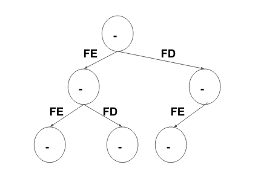
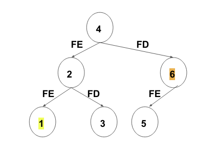
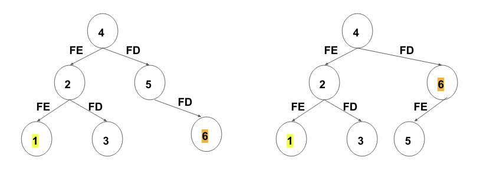
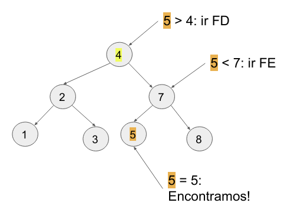
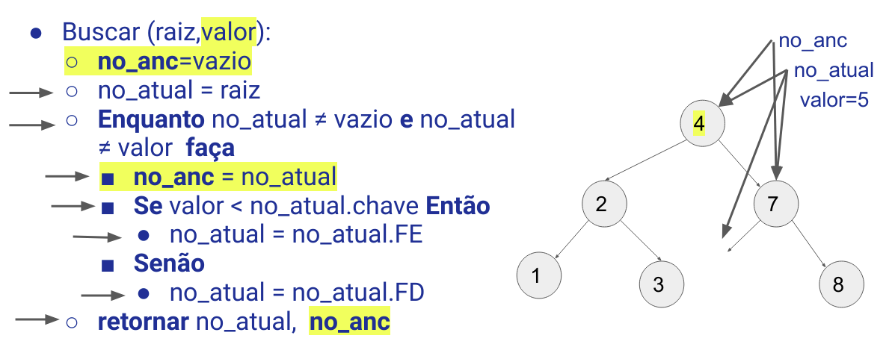
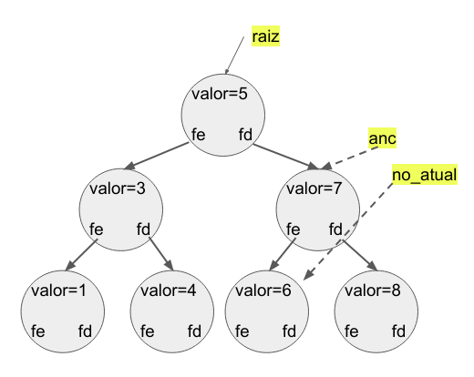
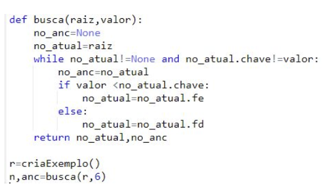
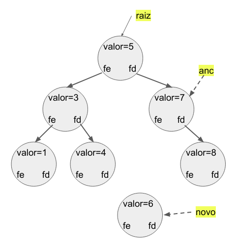
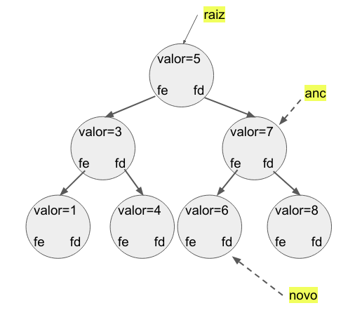

Disciplinas
-
ESTRUTURA DE DADOS-T01-2024-1 Concluído
Materiais
Vídeo 1 - [UFMS Digital] Estrutura de Dados - Módulo 2 - Unidade 1. sendProf° ministrante: Dr. Jonathan de Andrade Silva.
Conteúdo
Conceitos, algoritmo de inserção e algoritmo de busca.
PARTE 1
Pesquisa Linear.
- Considere um vetor V de valores ordenados V= [1,3,5,7,9,11,13] e desejamos buscar o valor 15, que não existe em V.
- Na busca convencional perguntamos de i=0 até i=6:
- V[i] == 15? (7 passos);
- Custo da busca O(N).
Pesquisa Binária.
- Essa estratégia assume que o conjunto de dados deve estar ordenado (crescente ou decrescente);
- Inicia a busca pela posição central do conjunto de dados;
- Se não for o elemento a ser buscado, divide o conjunto em duas metades, continuando a busca na metade onde o elemento pode estar;
- Esse processo é repetido até encontrar o elemento desejado ou chegar ao fim do conjunto de dados. Pesquisa Binária
- Considere um vetor V de valores ordenados V= [1,3,5,7,9,11,13] e desejamos buscar o valor 15, que não existe em V.
- Problema:
- Manter o vetor ordenado!
- Se aplicar a ordenação em cada operação de inserção e remoção o custo fica alto!
- Custo da inserção/remoção + custo da ordenação!
- Solução:
- Árvore de Busca Binária!
Árvore de Busca Binária.
- Como vimos no módulo anterior sobre Heap, na árvore binária temos:
- Cada nó possui até 2 filhos (FE e FD);
- A altura (h) da árvore é igual ao número de níveis -1;
- Propriedade:
- B < A < C
- B é o Menor
- C é o Maior
- A árvore a baixo é binária?
- Não!
- Propriedade:
- B < A < C
- B é o Menor
- C é o Maior
- A árvore a baixo é binária?
- Não! Por quê?
- 6 Viola a propriedade.
- Propriedade:
- B < A < C
- B é o Menor
- C é o Maior
- A árvore a baixo é binária?
- Agora sim!
- Propriedade:
- B < A < C
- B é o Menor
- C é o Maior
- A árvore a baixo é binária?
- Agora sim!
- Propriedade:
- B < A < C
- B é o Menor
- C é o Maior
- Como podemos organizar os valores de 1 a 6 nessa árvore?
- Onde colocar o menor e o maior valor?
- Propriedade:
- B < A < C
- B é o Menor
- C é o Maior
- Como podemos organizar os valores de 1 a 6 nessa árvore?
- Qual valor vai na raiz?
- Propriedade:
- B < A < C
- B é o Menor
- C é o Maior
- Como podemos organizar os valores de 1 a 6 nessa árvore?
- E os demais 2, 3 e 5?
- Propriedade:
- B < A < C
- B é o Menor
- C é o Maior
- Como podemos organizar os valores de 1 a 6 nessa árvore?
- E se a árvore fosse assim ↴ 
- Teríamos ↴ 
- Comparando as duas árvores binárias, temos: 
- Poderíamos ter outras configurações de árvore binária para os mesmos valores;
- Depende da ordem de inserção dos elementos.
- Propriedade:
- B < A < C
- B é o Menor
- C é o Maior
- Degenerada: cada nó possui exatamente 1 filho (n° de níveis = n° de nós);
- Quase-Completa: cada nível, exceto o último está completamente preenchido;
- Completa: todos os níveis estão completamente preenchidos;
- Cheia (completa): todos os nós, exceto os do último nível possuem exatamente 2 subárvores.
- Estritamente Binária: todo nó tem 0 ou 2 filhos.
- Nessa estrutura de dados gostaríamos de evitar obter árvores binárias degeneradas.
- Caso tenhamos árvores quase-completas ou completas, teríamos um ótimo desempenho na inserção, remoção e busca.
- De O(N) para O(log2N)!
Árvore Binária (Inserção).
- Em geral, consiste na operação de incluir elementos nas subárvores esquerda ou direita da raiz;
- Pode modificar a altura da árvore dependendo de onde for o local apropriado de inserção;
- Pode resultar nos tipos de árvores comentados anteriormente, por exemplo, árvores degeneradas.
- Deve garantir a propriedade da árvore de busca binária.
- Todo o processo de caminhada na árvore inicia-se na raiz;
- Precisamos encontrar em qual local na árvore podemos incluir o novo nó;
- Esse processo de inclusão sempre produzirá um nó folha;
- Esse novo nó se tornará um filho esquerdo (FE) ou filho direito (FD) do seu ancestral.
- Temos que encontrar o seu ancestral.
- Vamos visualizar o processo de inserção no VISUALGO (https://visualgo.net/en/bst);
- Vamos criar uma árvore vazia (“Create” -> “Empty”)
- Aplicar a função de inserção para os valores (“Insert(v)”):
- A = [1,2,3,4,7,8]
- B = [4,2,7,1,3,8]
- Qual dessas árvores é uma árvore binária degenerada (A ou B)? A. Observe a organização dos valores.
- Precisamos saber quando inserir na raiz ou buscar nas subárvores da esquerda ou direita o local de inserção.
- Inserir na raiz é quando a árvore está vazia;
- Qual a configuração de árvore vazia? Raiz sem nó.
- Fazer a raiz ser esse novo nó.
- Se a árvore tem raiz, então devemos buscar o local de inserção…
- Se a árvore tem raiz então devemos buscar o local de inserção.
- Percorrer/buscar desde a raiz e perguntar se o novo nó deve estar na subárvore da esquerda ou da direita;
- novo < nó atual: ir para FE;
- novo > nó atual: ir para FD;
- novo = nó atual: não inserir.
- Podemos gerar uma árvore degenerada.
Árvore Binária (Busca).
- Caminhar na árvore desde a raiz para encontrar um elemento ou encontrar uma posição de inserção para um novo elemento;
- Na busca por um elemento vamos realizar a busca para encontrar um valor;
- Na busca por uma posição de inserção vamos realizar a busca para encontrar um “ramo” sem filho (FE=vazio ou FD=vazio).
- Vamos assumir que a estrutura de dados que representa o nosso nó tem 3 campos:
- chave: contendo o valor;
- FE: contendo referência ao filho esquerdo;
- FD: contendo referência ao filho direito.
- Buscar o valor 5
- no = buscar(raiz,5)
Buscar(raiz,valor):
no_atual = raiz
Enquanto no_atual ≠ vazio e no_atual.chave ≠ valor faça
Se valor < no_atual.chave Então
no_atual = no_atual.FE
Senão
no_atual = no_atual.FD
retorna no_atual

Árvore Binária (Inserção).
- Agora que temos o algoritmo da busca, podemos criar o algoritmo de inserção.
- Porém, temos que ajustar a busca para obter também o ancestral;
- Lembrando: Se a árvore tem raiz, então devemos buscar o local de inserção.
Agora que ajustamos a busca para ter acesso ao nó ancestral, podemos definir o algoritmo de inserção.
- Após a adaptação do algoritmo de busca, temos:
- Buscar o ancestral:
- no, anc = buscar(raiz,valor)
- Conectar esse ancestral com o novo nó:
- Se valor < anc.valor Então
- anc.FE = novo
- Senão Se valor > anc.valor Então
- anc.FD = novo
- Como devem ficar os campos do novo nó após “CriaNo”?
- campo chave = valor;
- filhos FE e FD = vazio.
inserir(valor):
novo = criaNo(valor)
no, anc = buscar(raiz,valor)
Se no = vazio Então
Se valor < anc.valor Então
anc.FE = novo
Senão Se valor > anc.valor Então
anc.FD = novo
Árvore Binária (Análise).
- Conforme observamos, a inserção depende da busca de um local para inserir um novo nó.
- O custo da inserção depende do número de passos dessa busca:
- Caminhar em toda a altura da árvore;
- Complexidade de custo no pior caso O(N), se a árvore for degenerada.
- Se a árvore for completa ou quase-completa o custo fica em O(log2 N).
- Qual o melhor local de inserção de um novo nó?
- Filho esquerdo de 4.
- Qual o pior local de inserção de um novo nó?
- Filho (FE ou FD) do nó 9.
- Qual a altura da árvore?
- altura (h=3).
Implementação em Python.
PARTE II.
Árvore Binária (Estrutura de Dados).
- Podemos implementar a nossa árvore com 2 tipos de estrutura de dados:
- Vetor/Array, como fizemos na Heap.
- Acesso direto aos nós da árvore;
- Porém, o tamanho da árvore fica fixo.
- Utilizando Listas Ligadas.
- Não temos acesso direto aos nós;
- Porém, o tamanho da árvore é dinâmico.
- Vamos considerar então as Listas Ligadas.
- Queremos ter flexibilidade para inserção e remoção;
- Vamos considerar que cada nó tenha:
- campo chave = valor;
- campo FE = referência ao filho esquerdo;
- campo FD = referência ao filho direito.
- Vamos considerar também que a estrutura de dados Árvore Binária de Busca(ABB), pode ter:
- campo raiz = referência ao primeiro nó da árvore;
- campo h = indicando a altura da árvore.
- funções de manutenção:
- Inserção, remoção, busca, altura,...etc.
- Como conectar os nós 7 e 5 na raiz?
- raiz.fe = b;
- raiz.fd = a.
Código (https://pythontutor.com/render.html#mode=display)

- E se fizermos uma função chamada conectar para fazer essa ligação, como seria?
- lembre que temos que saber quais nós devem ir para esquerda ou direita da raiz.
- Se o nó tiver valor menor que a raiz, devemos conectar o nó com fe da raiz;
- Se o nó tiver valor maior que a raiz, devemos conectar o nó com fd da raiz;
- Vamos agora começar pela nossa função de busca.
- Percorrer desde a raiz e encontrar um valor ou local de inserção.
- Iniciar pela raiz e percorrer a árvore com duas variáveis:
- anc: ancestral (pai).
- no_atual: nó a ser buscado.
- Por exemplo, buscar(raiz, 6)
- buscar o nó com valor 6.
- anc = no(7) e no_atual = no(6)
buscar(raiz,valor):
no_anc = vazio
no_atual = raiz
Enquanto no_atual ≠ vazio e no_atual ≠ valor faça
no_anc = no_atual
Se valor < no_atual.chave Então
no_atual = no_atual.FE
Senão
no_atual = no_atual.FD
retornar no_atual, no_anc


Árvore Binária (Inserção):
- Juntando todas as funções…
- Vamos inserir o valor 6.
def inserir(raiz,valor):
novo = no(valor)
if raiz == None:
raiz = novo
else:
_ , anc = buscar(raiz,valor)
conectar(anc,novo)
inserir(raiz,6)


Árvore Binária (Classe).
- Agora podemos criar a nossa classe ABB que conterá todas as funções implementadas.
- conectar(raiz,no)
- buscar(raiz,valor)
- inserir(raiz,valor)
Referências
- CORMEN, Thomas. Algoritmos: teoria e prática. Rio de Janeiro: GEN LTC, 2013. ISBN 9788595158092. Disponível na Biblioteca Digital da UFMS.
- SZWARCFITER, Jayme Luiz; MARKENZON, Lilian. Estruturas de dados e seus algoritmos. 3. ed. Rio de Janeiro, RJ: LTC, 2010. ISBN 9788521629955. Disponível na Biblioteca Digital da UFMS.